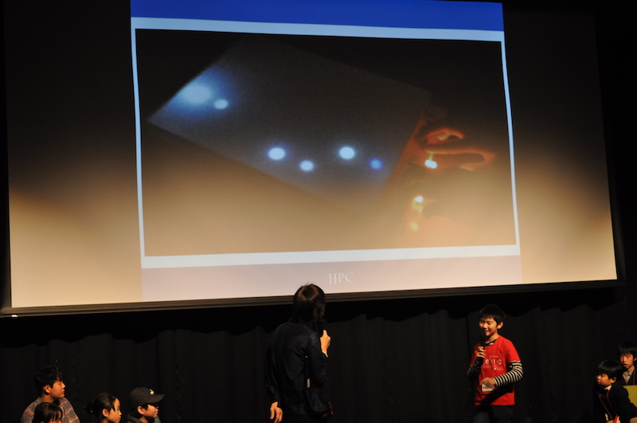

event
2018/01/07 全国小中学生プログラミング大会で準グランプリを頂きました!

昨年に行われた第2回全国小中学生プログラミング大会で、
準グランプリを頂きました!
今回入賞した作品は、4年生の時にバージョン1を作った 「キラキラミュージックBOX」です。
この作品は、落ちてくる光に合わせてタイミングよくボタンを押すと、 曲が流れる、いわゆる「音ゲー」です。
準グランプリを頂きました!
今回入賞した作品は、4年生の時にバージョン1を作った 「キラキラミュージックBOX」です。
この作品は、落ちてくる光に合わせてタイミングよくボタンを押すと、 曲が流れる、いわゆる「音ゲー」です。
色んな人の意見を取り入れて、改良を重ねてきました。
ver.1のときには、音が圧電スピーカーの音で小さく、 とても聞こえにくかったので、
ver.2では、ピアノのICを使って、スピーカーも変えて、
音を大きくしました。
また、そのときはまだ曲も速さも1種類だけだったので、
ver.3では速さを五段階選べるようにしました。
また、落ちてくる光が毎回一緒だったので、ver.3でランダムにしました。
今回受賞したver.4では、曲を3つ選べるようにしました。
また、難しさが目で見てわかるように、レベルメーターをつけました。
ノーミスでクリアすると、良いことがあります。
ver.1のときには、音が圧電スピーカーの音で小さく、 とても聞こえにくかったので、
ver.2では、ピアノのICを使って、スピーカーも変えて、
音を大きくしました。
また、そのときはまだ曲も速さも1種類だけだったので、
ver.3では速さを五段階選べるようにしました。
また、落ちてくる光が毎回一緒だったので、ver.3でランダムにしました。
今回受賞したver.4では、曲を3つ選べるようにしました。
また、難しさが目で見てわかるように、レベルメーターをつけました。
ノーミスでクリアすると、良いことがあります。


今後も改良出来たらいいと思っています。
準グランプリが取れて、嬉しかったです!!
良かったら見てください。↓
ver.4YouTubeで見る
ver.3YouTubeで見る
ver.1YouTubeで見る
準グランプリが取れて、嬉しかったです!!
良かったら見てください。↓
ver.4YouTubeで見る
ver.3YouTubeで見る
ver.1YouTubeで見る